使用 Node-RED 构建 DolphinDB 低代码平台
为了进一步简化 DolphinDB 的使用方式，我们在 Node-RED 上构建了一个 DolphinDB 低代码平台。通过可视化编程工具，我们将 DolphinDB 的功能抽象成易于理解的节点，使操作流程更加清晰明了。这种可视化方式不仅提高了用户使用平台的便捷性，还大大降低了用户的学习门槛。即使用户不了解 DolphinDB 的编程语言，也能轻松完成各种操作。
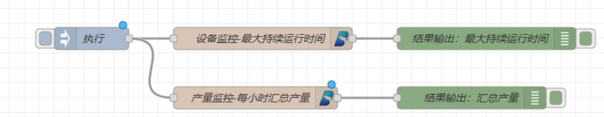
在我们的低代码平台上，用户只需使用简单的拖拉拽操作，便能实现无模式写入、数据清洗、降采样、设备监控、异常监测等功能，从而让数据处理变得更加便捷高效。
以下内容将详细介绍 Node-RED 平台的特点、DolphinDB 低代码平台的情况，以及开发 DolphinDB 节点的方法。
1. 关于 Node-RED
Node-RED 是一个开源的可视化编程工具，它让连接、编排和自动化物联网设备、API 和在线服务变得非常简单。它使用户能够通过简单地拖拽和连接节点来创建应用程序，其中每个节点代表一个特定的功能或服务。你可以把它想象成一个拼图游戏，通过拖拽和连接不同的拼图，就可以创建出各种应用程序。
举个例子，人们会希望在回家的路上就能开启空调，到家即享清凉。借助 Node-RED 可以轻松实现这个需求。通过简单地拖拽微信节点、消息处理节点和空调控制节点，然后连接设置它们，就能实现这个流程。这样，只需在微信上发送一条消息，就能控制家中空调的开关。
Node-RED 是基于 Node.js 构建的，因此具有轻量化和高效的特点。它充分利用了 Node.js 的事件驱动和非阻塞模型，在网络边缘的低成本硬件（如 Raspberry Pi）和云中表现出色。这使得 Node-RED 成为一个非常适用于各种场景的工具。
Node-RED 的节点扩展库中包含了许多内置节点和功能，例如数据库访问、Web 服务和电子邮件通知，这些功能大大简化了开发过程。它提供了强大的功能组件，让用户能够快速搭建复杂的物联网设备、API 和在线服务，无需编写繁琐的代码。
此外，Node-RED 使用 JSON 格式来存储流程，这使得共享和导入导出变得非常方便。用户可以轻松地与其他人分享自己的流程，并从社区中获取更多的解决方案和灵感。这种开放性和合作性为用户提供了更多的可能性和灵活性。
总的来说，Node-RED 是一个强大且易于使用的工具，提供了一个可视化编程环境，使用户能够轻松地连接、编排和自动化物联网设备、API 和在线服务。无论在物联网、自动化还是数据流处理领域，Node-RED 都是一个非常实用和受欢迎的工具，为用户带来了极大的便利和效率。
2. DolphinDB 低代码平台
2.1. 平台介绍
DolphinDB 低代码平台是一个基于 Node-RED 的 DolphinDB 功能可视化平台。具有强大的可扩展性，为用户提供了开发自定义功能节点的可能性。用户可以根据自身需求开发适合自己业务场景的功能节点，从而进一步增强平台的功能和适应性。
在案例介绍章节中，我们将介绍 DolphinDB 节点的开发方法，帮助用户更好地利用该低代码平台，实现更多个性化需求。
本文所提供的 DolphinDB 低代码平台案例提供了十余个节点，划分为文件操作、数据清洗和 DolphinDB 功能节点三个类别。文件操作类别提供了数据加载节点，方便用户将本地文件加载到 DolphinDB 的内存表中。数据清洗类别则提供了格式转换、NULL 填充、数据去重和数据归一化等功能节点，帮助用户实现各种数据清洗操作。而在 DolphinDB 功能节点类别中，提供了数据入库、降采样、无模式写入、流数据表创建和流数据引擎等功能节点，使用户能够轻松使用 DolphinDB 的功能，而无需掌握其编程语言。
2.2. 使用说明
DolphinDB 低代码平台是基于 Node-RED 构建的，所以需先安装 Node-RED，Node-RED 的官方安装教程可参考：Getting Started : Node-RED 。在完成 Node-RED 的安装之后，可按以下步骤安装 DolphinDB 节点。
下载 DolphinDB 节点。下载附件中的 DolphinDB 节点
node-red-contrib-dolphindb-main安装包。例如在下例中，下载并解压至 D:\Node_Red_Project 文件夹下，文件里的内容如下：
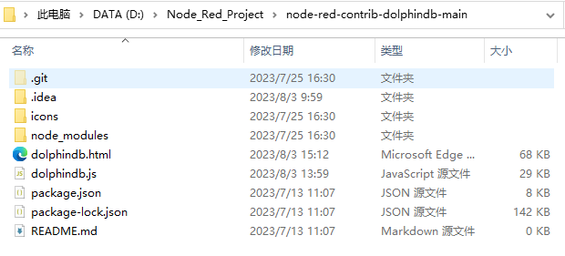将 DolphinDB 节点安装到 Node-RED 中。进入到 .node-red 目录（此目录应该在 C:\Users<用户名> 目录下面），然后用 npm 安装
node-red-contrib-dolphindb-main。具体指令如下，其中 D:\Node_Red_Project\node-red-contrib-dolphindb-main 是 DolphinDB 节点安装包的下载路径。
cd C:\Users\<用户名>\.node-red npm install D:\Node_Red_Project\node-red-contrib-dolphindb-main安装成功后会出现以下内容。
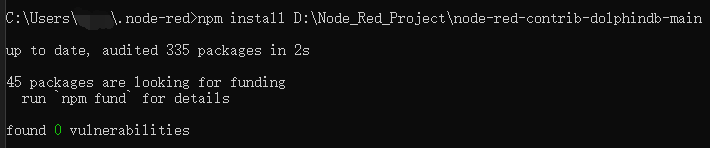使用 DolphinDB 节点。在 cmd 中输入指令
node-red以开启 Node-RED 服务。出现以下内容表示 Node-RED 服务启动成功。
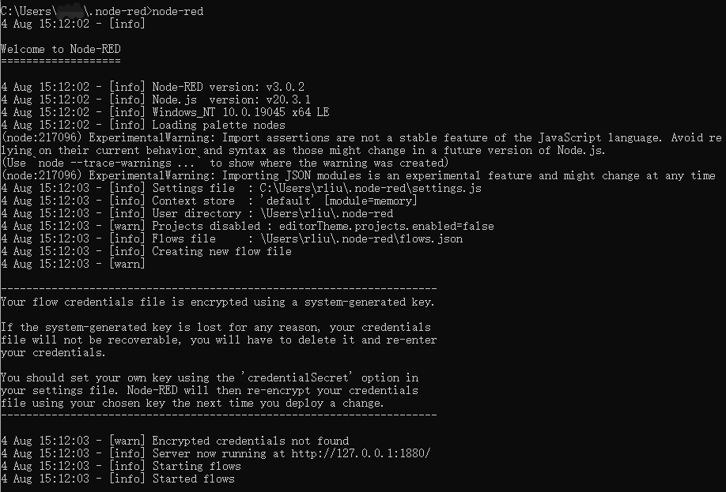打开网页 http://localhost:1880，左侧选项板中会出现 DolphinDB 节点，拖出来使用即可。
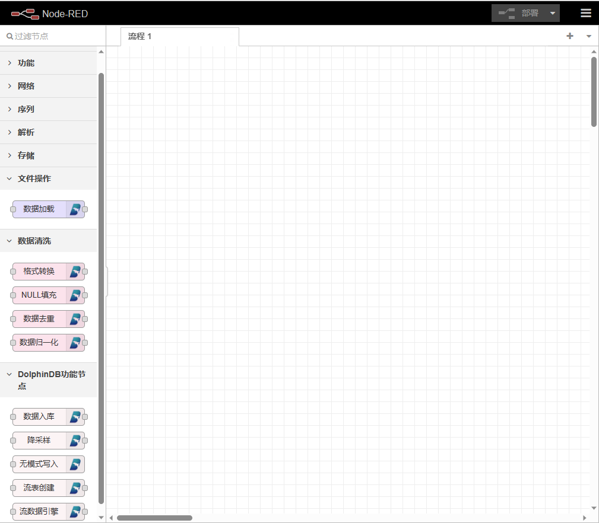
3. 案例介绍
3.1. 数据处理流程
在本文的 DolphinDB 低代码平台案例中，用户可以轻松地以拖拽的方式实现数据清洗流程。下文将介绍如何加载 CSV 文件中的数据，对其进行数据清洗，最后将清洗后的数据存入 DolphinDB 数据库。
首先，我们有以下 CSV 文件中的数据：
| id | date | price | qty | tmp |
|---|---|---|---|---|
| 1 | 2018.01.02 | 70.832104 | 1719 | 1.2 |
| 1 | 2018.01.03 | 12.22557 | 3.2 | |
| 3 | 2018.01.04 | 8.695886 | 1656 | 0.4 |
| 4 | 2018.01.05 | 24.324535 | 2860 | 2 |
| 5 | 2018.01.06 | 0.443173 | 6874 | 3.8 |
| 6 | 2018.01.07 | 90.302176 | 3277 | -1.8 |
| 7 | 2018.01.08 | 78.556843 | 3424 | -0.6 |
| 8 | 2018.01.09 | 45.836447 | 8636 | 0.4 |
| 9 | 2018.01.10 | 57.416425 | 707 | 1.6 |
| 10 | 2018.01.11 | 98.879764 | 2267 | 4.2 |
数据清洗的具体操作过程如下：
- 将 CSV 文件中的数据加载到 DolphinDB 内存表中。
- 去除 id 列的重复值，确保每个 id 的数据是唯一的。
- 对 price 列进行格式转换，将数据统一为两位小数。
- 对 qty 列的 NULL 值，使用平均值进行填充，确保数据完整性。
- 对 tmp 列进行 Max-Min 归一化，将数据缩放到 0 到 1 的范围。
- 将清洗之后的数据存入 DolphinDB 数据库，以便后续的数据分析和应用。
以下为在 DolphinDB 低代码平台上实现上诉数据处理操作的过程。
将 inject，加载文件，格式转换，null 填充，去重，数据归一化和数据入库节点拖拽到工作区中
按照数据清洗的逻辑顺序将节点连接起来。
图 5. 数据清洗流程 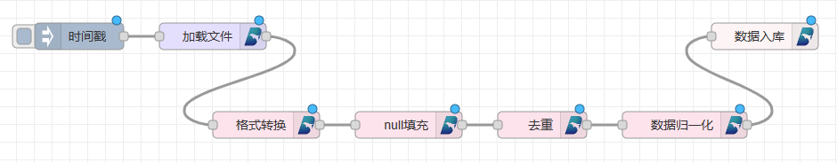点击节点，对节点进行相应的参数配置。
图 6. 数据加载节点的编辑页面 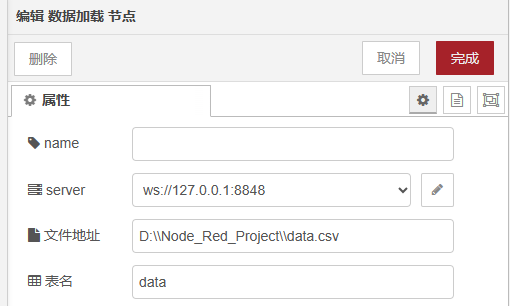图 7. 数据归一化节点的编辑页面 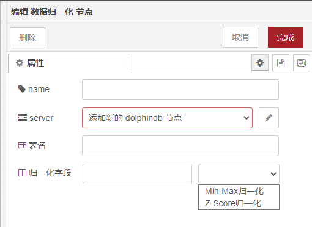点击工作区右上角的 部署 按钮。
点击时间戳节点，触发流程启动。随后可在 DolphinDB 数据库中查看经过清洗之后的数据。
图 8. DolphinDB 数据库中经过清洗之后的数据 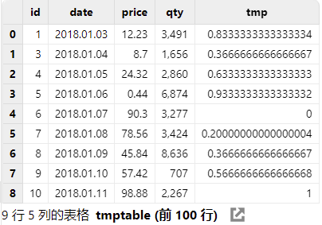
3.2. 无模式写入
无模式写入是一种数据库写入方式，特别适用于物联网场景的设备采集数据。在传统的关系型数据库中，数据写入需要事先定义好数据表的结构，包括字段名称、数据类型和约束等信息。然而，在现实世界中，很多数据并不适合严格的表结构，例如采集频率不同的各类传感器数据等。
无模式写入解决了这个问题，它允许将数据直接写入数据库中，无需提前定义表结构。数据可以按照其原始格式灵活存储，无需额外的数据转换和处理，从而大大简化了数据写入的过程。
在 DolphinDB 低代码平台上，实现无模式写入的流程可以通过两个节点轻松完成。以下为实现无模式写入的具体过程：
将 Mqtt In 节点和 无模式写入 节点拖拽到工作区
将两个节点连接起来
点击节点，进行参数设置。在 Mqtt In 节点中设置服务端和消息主题，在无模式写入节点中设置数据库名称。
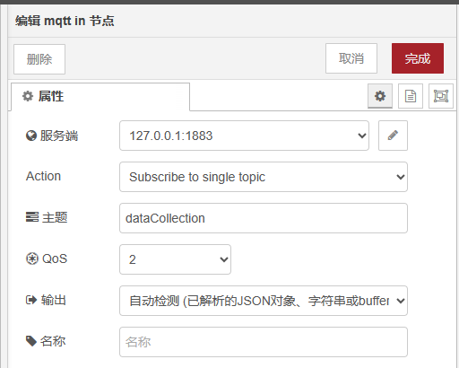
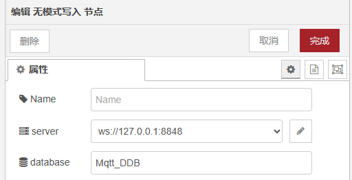点击部署按钮。
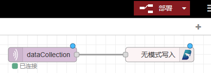
之后就可以向 mqtt 发消息，实现无模式写入。无模式写入中，在向 mqtt 发消息时，需要按照一定的格式要求，发送消息。这里发送多条类似以下内容的消息给 mqtt。
{
"tags":{
"deviceCode": "361RP01",
"logicalPositionId": "1",
"physicalPositionId": "AI361RP01T"
},
"fields":{
"propertyValue":1505
},
"time": "2023-07-22 15:53:08"
}如果运行成功，DolphinDB 中将出现名为 "Mqtt_DDB" 的数据库，并且数据库会不断接收来自 "Mqtt" 的消息。
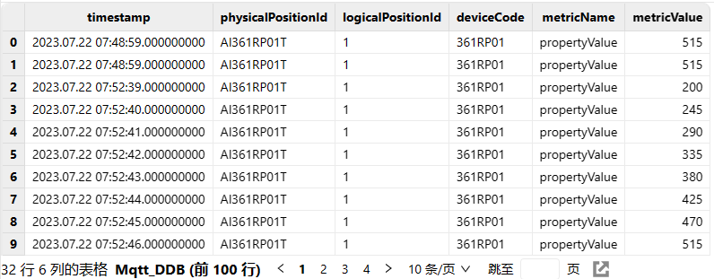
4. DolphinDB 节点开发方法
DolphinDB 节点是基于 Node-RED 的，因此开发 DolphinDB 节点需要先掌握 Node-RED 节点开发的基础知识。可参照：Node-RED 节点开发教程。
DolphinDB 的安装包中包含核心文件 dolphindb.html 和 dolphindb.js。其中，dolphindb.html 主要用于定义 DolphinDB 节点的属性、编辑对话框和帮助文本，而 dolphindb.js 则主要用于定义 DolphinDB 节点的功能。
在 DolphinDB 节点的 html 文件部分与普通 Node-RED 节点开发流程相似，因此这里不再赘述。我们重点介绍 dolphindb.js 中的节点功能实现方法，可参照：JavaScript API 进行开发。
4.1. 在 JavaScript 中连接 DolphinDB
在 JavaScript 中导入 DolphinDB，并设置连接配置，建立与 DolphinDB 的连接。
import { DDB } from 'dolphindb' // 使用 WebSocket URL 初始化连接到 DolphinDB 的实例（不建立实际的网络连接） let ddb = new DDB('ws://127.0.0.1:8848', { // 是否在建立连接后自动登录，默认 `true` autologin: true, // DolphinDB 登录用户名，默认 `'admin'` username: 'admin', // DolphinDB 登录密码，默认 `'123456'` password: '123456', // 设置 python session flag，默认 `false` python: false, // 设置该选项后，该数据库连接只用于流数据 streaming: undefined }) // 建立到 DolphinDB 的连接 await ddb.connect()建立配置节点，连接到 DolphinDB
function DolphinConfigNode(n) { RED.nodes.createNode(this, n); this.url = n.url this.name = n.name this.client = new DDB(this.url, { autologin: true, username: this.credentials.username, password: this.credentials.password, python: false, streaming: undefined }) } RED.nodes.registerType("dolphindb", DolphinConfigNode, { credentials: { username: { type: "text" }, password: { type: "password" } } });DolphinDB 节点构造：
a. 节点构造函数。节点由构造函数定义，该函数可用于创建节点的新实例。该函数传递一个包含流编辑器中设置的属性的对象。它必须做的第一件事是调用该
RED.nodes.createNode函数来初始化所有节点共享的特征，然后就可以执行特定于节点的代码。//构造函数 function DolphinDBNode(config) { RED.nodes.createNode(this,config); // 获取 DolphinDB 配置结点 this.dolphindb = n.dolphindb; this.dolphindbConfig = RED.nodes.getNode(this.dolphindb); var client = this.dolphindbConfig.client; //功能语句 } //注册节点 RED.nodes.registerType("DolphinDB",DolphinDBNode);b. 接收消息。节点注册该事件的侦听器 input，以接收来自流中上游节点的消息。一旦收到消息，就执行相应的功能。
this.on('input', function(msg, send, done) { //执行功能 });函数语句。在 JavaScript 中，我们使用
eval()函数来执行 DolphinDB 脚本。一般来说，我们将 DolphinDB 脚本分为函数func和函数调用funcall两个部分，然后将它们拼接在一起，并调用eval()函数来执行 DolphinDB 脚本。var func=`def foo(a,b){ return a+b; }` var funcall=`foo(11,11)` var secipt=func+funcall const result = await ddb.eval(script)
4.2. 案例
最后，我们以数据归一化节点为例，来介绍 DolphinDB 节点的功能实现代码。
//构造函数
function DolphinDataNormalizationNode(n) {
RED.nodes.createNode(this, n);
// 获取 DolphinDB 配置结点
this.dolphindb = n.dolphindb;
this.dolphindbConfig = RED.nodes.getNode(this.dolphindb);
if (!this.dolphindbConfig) { //检查是否成功获取了 DolphinDB 配置节点
this.error(RED._("dolphindb.errors.missingconfig"));
return;
}
var client = this.dolphindbConfig.client;
//将当前节点的上下文保存在变量 node 中
this.name=n.name;
this.tableName=n.tableName;
this.colName=n.colName;
this.normalizeType=n.normalizeType;
var node = this;
//DolphinDB 脚本
var func=`def minMaxNormalization(tableName,colName){
pt=objByName(tableName);
minNum=min(pt[colName]);
maxNum=max(pt[colName]);
pt[colName]=(pt[colName]-minNum)/(maxNum-minNum);
}
def ZSoreNormalization(tableName,colName){
pt=objByName(tableName);
meanNum=mean(pt[colName]);
stdNum=std(pt[colName]);
pt[colName]=(pt[colName]-meanNum)/stdNum;
}
def dataNormalization(tableName,colName,type){
if(type==1){
minMaxNormalization(tableName,colName);
}else if(type==2){
ZSoreNormalization(tableName,colName);
}
}`;
var funcall =`dataNormalization("${this.tableName}",\`${this.colName},${this.normalizeType})`;
var script =func+funcall;
console.log(script) //打印生成的 DolphinDB 脚本，用于调试和查看。
//注册监听器 input，一旦收到消息，则执行 DolphinDB 脚本
node.on('input', async function (msg, send, done) {
client.eval(script).then(res => {
send(msg)
done()
}).catch(err => {
console.log(err)
done(err)
})
});
}
//注册节点
RED.nodes.registerType("数据归一化", DolphinDataNormalizationNode);5. 总结
本文介绍了 Node-RED 平台，Node-RED 以其简单的拖拽和连接节点的方式，让用户能够轻松创建各种应用程序，无需编写繁琐的代码。
DolphinDB 低代码平台的构建基于 Node-RED。通过可视化编程方式将 DolphinDB 功能可视化为节点，使操作流程清晰明了。其中，数据清洗和无模式写入案例，展示了 DolphinDB 低代码平台的简便性和高效性。
更重要的是，DolphinDB 低代码平台具有很强的可扩展性。用户可以根据自身需求开发自定义功能节点，进一步增强平台的功能和适应性。这种开放性为用户提供了更多可能性和灵活性，使他们能够在平台上实现更多个性化需求。
通过 Node-RED 平台和 DolphinDB 低代码平台，用户能够轻松构建复杂的物联网设备、API 和在线服务，实现数据处理和存储，加速创新和数字化转型的进程。